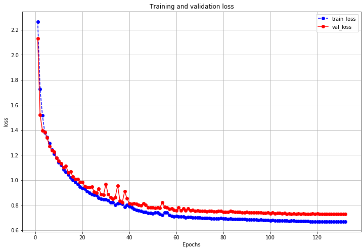
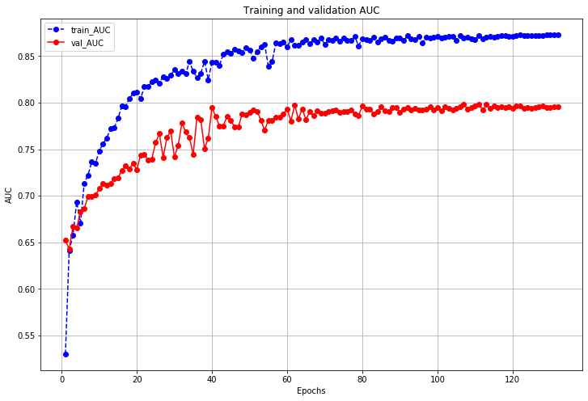

结构化数据是比较基础, 但也是很重要, 很常用的一类数据.
这里示范一下完整的从结构化数据处理, 到构建模型, 再到训练评估的过程.
数据预处理
使用经典的titanic数据集, 目标是根据乘客信息预测他们在Titanic号撞击冰山沉没后能否生存.
结构化数据可以使用pandas中的DataFrame进行预处理, 包括缺失值填充等. 这里主要目的是展示数据处理和建模流程, 因此不做更多的特征工程.
字段说明:
- Survived: 0代表死亡, 1代表存活 (y标签)
- Pclass: 乘客所持票类, 有三种值(1, 2, 3) (embedding)
- Name: 乘客姓名 (舍去)
- Sex: 乘客性别 (转换成bool特征)
- Age: 乘客年龄(有缺失) (数值特征, 添加“年龄是否缺失”作为辅助特征)
- SibSp: 乘客兄弟姐妹/配偶的个数(整数值) (数值特征)
- Parch: 乘客父母/孩子的个数(整数值) (数值特征)
- Ticket: 票号(字符串) (舍去)
- Fare: 乘客所持票的价格(浮点数, 0-500不等) (数值特征)
- Cabin: 乘客所在船舱(有缺失) (添加“所在船舱是否缺失”作为辅助特征)
- Embarked: 乘客登船港口: S、C、Q(有缺失) (embedding)
1 | import numpy as np |
1 | train = pd.read_csv('./data/titanic/train.csv') |
((891, 13), (418, 13))
1 | train.info() |
<class 'pandas.core.frame.DataFrame'>
RangeIndex: 891 entries, 0 to 890
Data columns (total 13 columns):
Age 714 non-null float64
Cabin 204 non-null object
Embarked 889 non-null object
Fare 891 non-null float64
Name 891 non-null object
Parch 891 non-null int64
PassengerId 891 non-null int64
Pclass 891 non-null int64
Sex 891 non-null object
SibSp 891 non-null int64
Survived 891 non-null float64
Ticket 891 non-null object
id 891 non-null object
dtypes: float64(3), int64(4), object(6)
memory usage: 90.6+ KB
1 | test.info() |
<class 'pandas.core.frame.DataFrame'>
RangeIndex: 418 entries, 0 to 417
Data columns (total 13 columns):
Age 332 non-null float64
Cabin 91 non-null object
Embarked 418 non-null object
Fare 417 non-null float64
Name 418 non-null object
Parch 418 non-null int64
PassengerId 418 non-null int64
Pclass 418 non-null int64
Sex 418 non-null object
SibSp 418 non-null int64
Survived 418 non-null int64
Ticket 418 non-null object
id 418 non-null object
dtypes: float64(2), int64(5), object(6)
memory usage: 42.6+ KB
1 | all_df = train.append(test) |
<class 'pandas.core.frame.DataFrame'>
Int64Index: 1309 entries, 0 to 417
Data columns (total 13 columns):
Age 1046 non-null float64
Cabin 295 non-null object
Embarked 1307 non-null object
Fare 1308 non-null float64
Name 1309 non-null object
Parch 1309 non-null int64
PassengerId 1309 non-null int64
Pclass 1309 non-null int64
Sex 1309 non-null object
SibSp 1309 non-null int64
Survived 1309 non-null float64
Ticket 1309 non-null object
id 1309 non-null object
dtypes: float64(3), int64(4), object(6)
memory usage: 143.2+ KB
1 | ft_cols_list = [] |
1 | # Pclass |
[3, 1, 2]
1 | # Sex |
['male', 'female']
1 | # Age |
29.881137667304014
1 | # SibSp |
1 | # Parch |
1 | # Fare |
33.2954792813456
1 | # Cabin |
1 | # Embarked |
S 914
C 270
Q 123
Name: Embarked, dtype: int64
['S', 'C', 'Q']
1 | all_df.info() |
<class 'pandas.core.frame.DataFrame'>
Int64Index: 1309 entries, 0 to 417
Data columns (total 15 columns):
Age 1309 non-null float64
Cabin 295 non-null object
Embarked 1309 non-null object
Fare 1309 non-null float64
Name 1309 non-null object
Parch 1309 non-null int64
PassengerId 1309 non-null int64
Pclass 1309 non-null int64
Sex 1309 non-null int64
SibSp 1309 non-null int64
Survived 1309 non-null float64
Ticket 1309 non-null object
id 1309 non-null object
is_age_null 1309 non-null int64
is_cabin_null 1309 non-null int64
dtypes: float64(3), int64(7), object(5)
memory usage: 163.6+ KB
1 | train = all_df.iloc[: 891] |
1 | # 从csv文件构建数据管道 |
构建模型
1 | from tensorflow.keras import layers, models, regularizers, callbacks |
1 | model.compile(optimizer='adam', loss='binary_crossentropy', metrics=['AUC']) |
1 | history = model.fit(ds_train, |
Epoch 1/1000
7/7 [==============================] - 2s 333ms/step - loss: 2.2648 - AUC: 0.5301 - val_loss: 2.1298 - val_AUC: 0.6524
Epoch 122/1000
7/7 [==============================] - 0s 14ms/step - loss: 0.6692 - AUC: 0.8731 - val_loss: 0.7278 - val_AUC: 0.7968
评估模型
1 | import matplotlib.pyplot as plt |
1 | plot_metric(history, "loss") |

1 | plot_metric(history, "AUC") |
